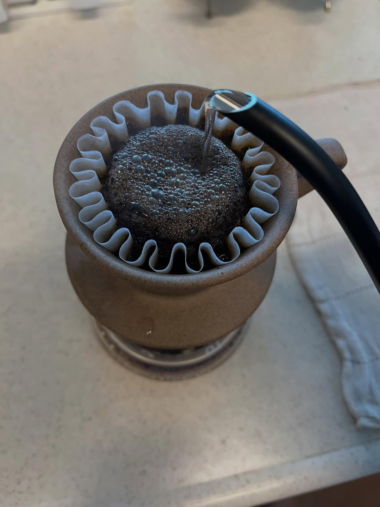
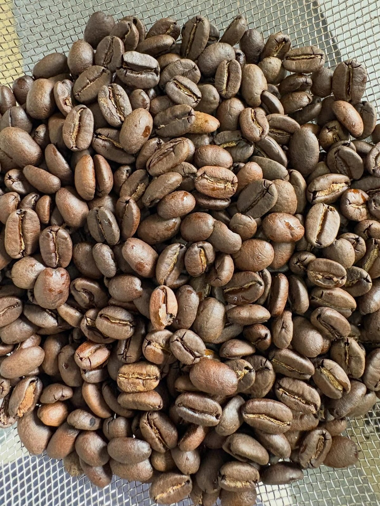
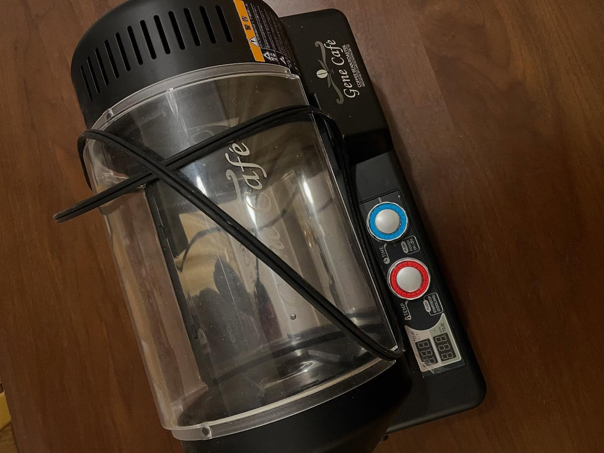
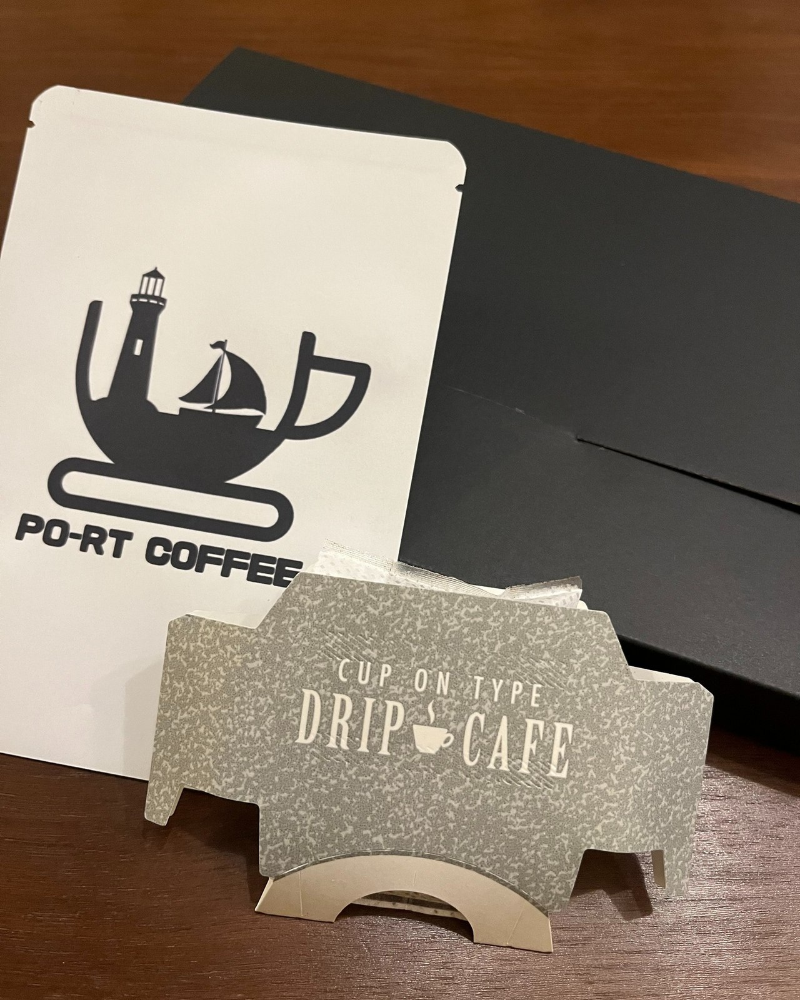
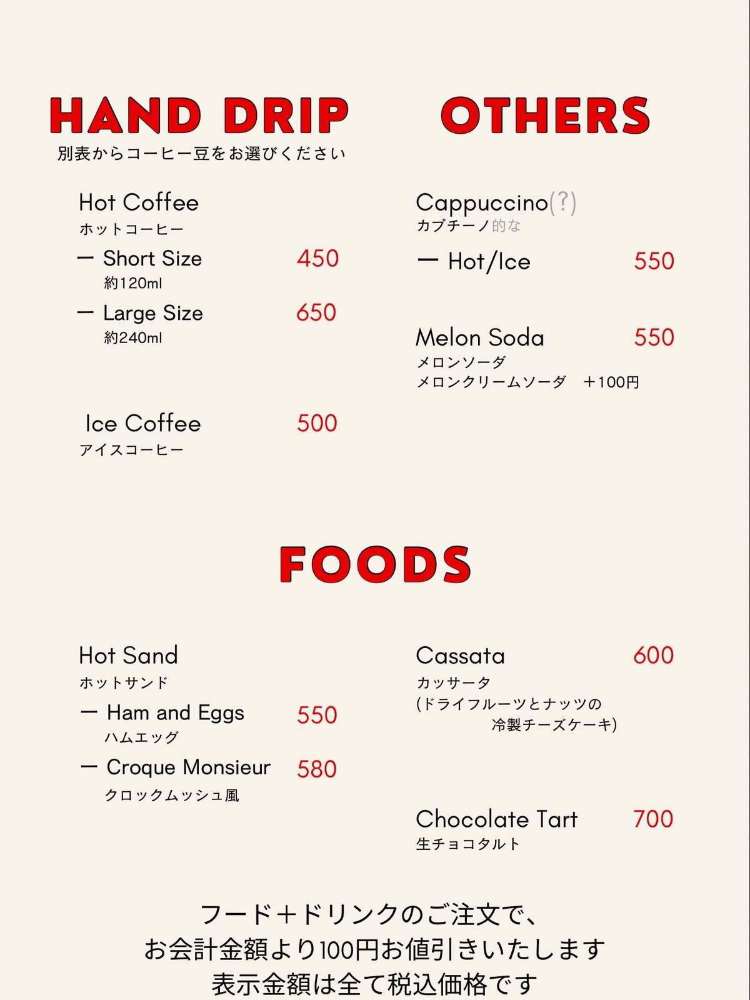
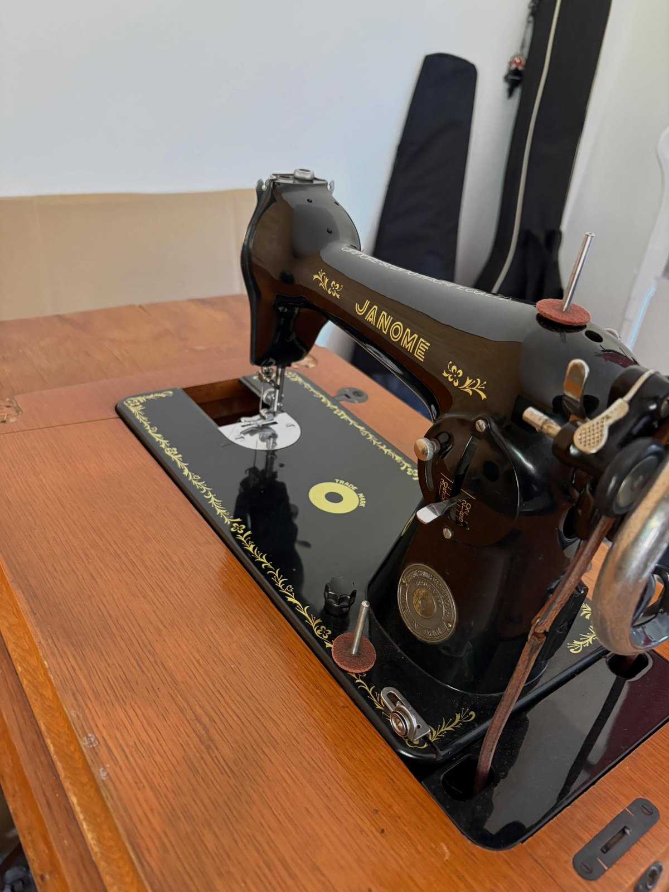
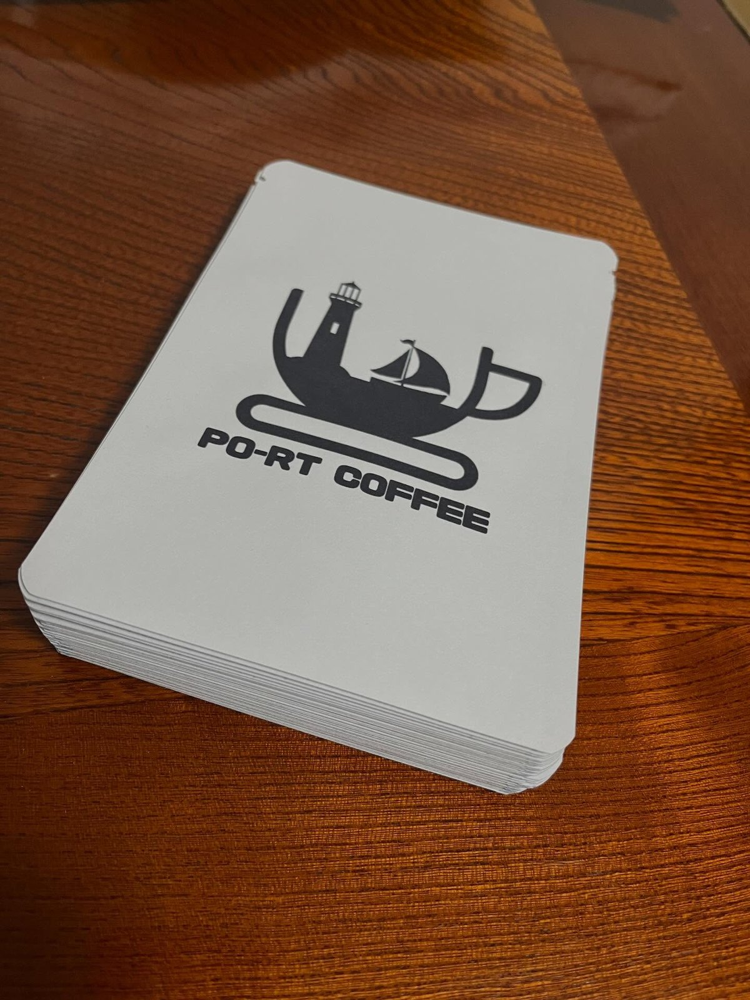
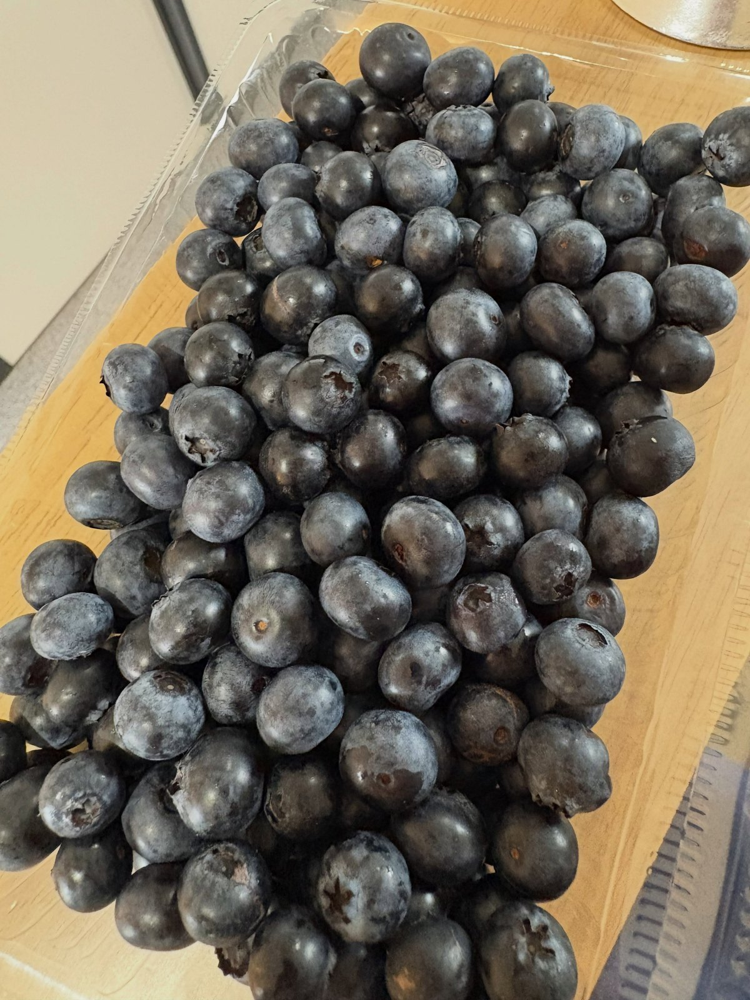

ハンドドリップ 450円／650円
別表からコーヒー豆を選んで、一杯ずつ淹れる方式です。ショート約120ml 450円、ラージ約240ml 650円。アイスコーヒーは500円。
COFFEE & SUCCULENTS — KAMIFUKUOKA, FUJIMINO
船が港に帰るように。
ふじみ野市上福岡の、コーヒーと多肉植物の店。
10:00〜18:00｜水曜定休｜上福岡駅 西口から徒歩約10分
ABOUT
上福岡駅の西口から歩いて10分ほど、2026年7月にグランドオープンしたコーヒーと多肉植物の店です。大阪で焙煎士として修行を積んだ店主が、自分で焙煎した豆を一杯ずつ淹れています。
豆はブレンドとストレートの両方。ストレートは一つの豆につき三種類の焼き加減を用意しているので、同じ産地でも好みの濃さで選べます。リメイク缶の寄せ植えは店主の手づくり。コーヒーと多肉植物、二つが並ぶ店です。

「飲みやすい深煎り」の、店のブレンド。
PHOTOS






SHOP INFO
| 店名 | PO-RT COFFEE（ポートコーヒー） |
|---|---|
| 住所 | 埼玉県ふじみ野市上福岡4-6-11 |
| アクセス | 東武東上線 上福岡駅 西口より徒歩約10分 |
| 営業時間 | 10:00〜18:00 |
| 定休日 | 水曜日 |
| お支払い | 現金のみ |
CONTACT
お問い合わせはInstagramのメッセージへ。ネットショップもご利用いただけます。